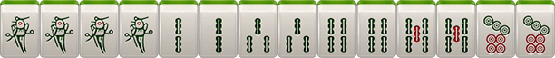
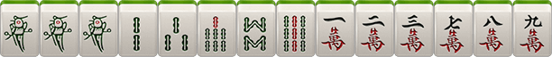
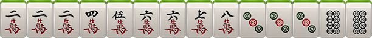

血战麻将
一、游戏规则
1、牌数：麻将“筒”、“条”、“万”共108张
2、玩家胡牌后，其余玩家继续游戏，直到流局或只有一位未胡牌玩家为止
3、胡牌时，手牌最多只有2种花色，否则不可以胡牌
4、坐庄规则：上一局最先胡牌玩家当庄，如一炮多响则点炮玩家为庄，流局则庄家的下家当庄
5、可碰、可杠、不可吃、可点炮、可自摸
6、流局时查叫：即未叫玩家要赔偿有叫玩家最大可能番数，查花猪玩家（含三种花色牌）需赔偿全部玩家4番（封顶范围内）或封顶番的积分，未叫玩家的刮风下雨不算分
二、术语解释
1、换三张：游戏开始时，玩家需要选中3张同花色的牌与其他玩家随机交换
2、定缺：摸牌结束后由玩家选择一种花色作为该局游戏定缺的花色，游戏中必须优先打该花色的牌（不能碰不能杠），除了其他花色牌的碰杠
3、刮风（明杠）：分为直杠和面下杠（巴杠）
直杠：玩家手中有三张一样的牌，其他玩家打出此牌，该玩家选择杠，收点杠玩家2积分
面下杠：玩家已经碰出一对牌，又自摸到碰出的牌选择杠，收未胡牌玩家1积分，此时可以被其他玩家抢杠胡，若抢杠胡则此杠不结算
4、下雨（暗杠）：玩家手中含有4张相同的牌（未碰），此时玩家选择杠。暗杠不可被抢杠胡，收未胡牌玩家2积分
5、过手胡：在某一回合中，若有人点炮，玩家没有胡，则此回合有其他玩家点炮，只要没有加番就也不能胡，自摸除外。当玩家摸牌，碰牌，杠牌后，过手胡限制解除
6、查大叫：流局时没叫的玩家赔给有叫的玩家最大可能的番数（封顶范围内）
7、自摸：玩家自摸胡牌时，赢得其他未胡牌的玩家积分
8、呼叫转移：开杠的人在杠上点炮后，杠钱要一并转移给接炮的人。如果杠不结算则不转移，如点炮玩家为查叫玩家
9、杠上开花：点杠杠上开花算点炮与自摸有两种玩法选项。巴杠和暗杠杠上花算自摸三家
三、胡牌类型
1、平胡（0番）：四坎（除4副刻子）加一对将
2、对对胡（1番）：四副刻子加一对将

3、清一色（2番）：全部是一种花色的平胡

4、七对（2番）：玩家手牌都是对子，没有碰和刮风下雨

5、龙七对（3番）：特殊的七对，只是7对中含有4张相同牌且没有杠出
6、清对（3番）：清一色+对对胡

7、清七对（4番）：清一色+七对

8、清龙七对（5番）：清一色+龙七对

9、全幺九（3番）：所有牌中，全部是1或者9组成的一句话、刻子、将牌
10、将对（3番）：所有牌中，全部是2.5.8组成的对对胡

11、将七对（4番）：所有牌中，全是2.5.8组成的龙七对
12、门清（1番）：胡牌时，没有碰过牌，没有明
13、中张（1番）：胡牌时，牌型中不包括1个9
四、番计算
1、番=底金X2
例如：底金为1分，0番（前提是胡了）=1分，1番=1*2=2分，2番=1*2*2=4分，3番=1*2*2*2=8分
2、基本输（赢）积分=番数+刮风下雨+自摸加底（自摸加番玩法则算在总番里）
3、点炮结算方式为1对1，自摸结算方式为1对多
4、另加番
根：+1番，所有牌中有4张一样的牌，（无论是碰、杠），可累计计算
杠上开花：+1番
杠上炮：+1番
抢杠胡：+1番
扫底胡：+1番 （牌墙最后一张牌自摸或点炮胡）
金钩胡：+1番（剩余一张牌单钓）
海底炮：+1番（牌墙最后一张牌点炮胡），且非必须打出
天胡：+3番（庄家起手胡牌）
地胡：+2番 （闲家待庄家出完第一张牌后，自摸一张胡牌）
备注：各个牌型不重复计算，只收取最大番，且总番数不超过所选的封顶番数